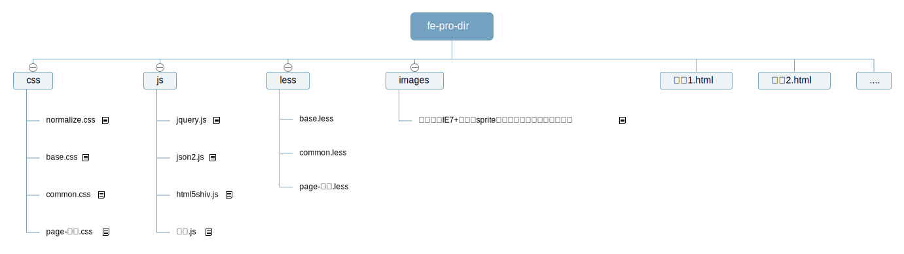

前端大部分的工作是在切图上，即设计师提供psd文件，前端将其实现，其中包括可以看到的界面、psd上看不到的交互以及后端人员使用的数据交互接口；所以为了前端小组内部的代码易读以及模块化合作编码，制定前端开发规范就十分必要，项目结构搭建就是其中的一部分，即项目小组成员要开始一个切图工程的时候要按照该规范做到以下方面，包括但是不限于：
当然前端开发规范不限于项目结构搭建，也包括html标签语义化书写、样式表预编译工具使用（less|sass）、松耦合可复用前端交互插件编写规范(主要基于jquery)、前端工程化工具的使用（例如gulp|grunt）、前端模块化工具使用（seajs|requirejs）等，尚未考虑到的部分会在后续补充，希望我们共同在未来来完善该规范，首先我们对项目结构搭建的说明。

说明：项目目录结构规范的也许不合理或者存在问题请提出并共同修改，如果是因为个人习惯而不愿意采用请习惯，因为目录结构统一是团队合作的基础也是代码一致性的要求
跨浏览器初始化页面样式，并非所有样式重置，只是修补各款浏览器的差异和bug，该样式表开源，MIT协议，国外大牛总结，随意使用
该文件存放页面结构以及通用部分的样式表，比如header|wrap，也可以存放原子式样式表
该文件存放通用样式表文件，主要存放插件的样式表，实现插件的热插拔
该样式表存放该页面的特有样式，主要是业务相关的样式，文件名称规定为page-html文件名称.css
跨浏览器兼容javascript库
解决IE8以及IE8-浏览器不支持JSON相关的API的javascript库，浏览器能力补偿库，一般采用
<!--[if lt IE 9]>
<script type="text/javascript"src="js/json2.js"></script>
<![endif]-->
形式添加，这是浏览器hack的方式
解决IE8以及IE8-浏览器不支持HTML5（例如header|section|article|footer）标签的javascript库，浏览器能力补偿库，一般采用
<!--[if lt IE 9]>
<script type="text/javascript"src="js/html5shiv.js"></script>
<![endif]-->
形式添加，浏览器hack的方式
编写该业务界面的javascript，js文件命名应该和html文件的名字一致
如果兼容IE7+，使用sprite图标（合并图标，节约带宽） IE7以及IE7+支持background-posiiton属性，所以使用该属性可以实现图标的局部显示，也是雪碧图（sprite）的实现原理
业务页面1
业务页面2
其他业务页面或者其他扩展目录
以上为项目目录以及文件组织形式的前端小组的内部规定，无论是否与自己的习惯一致与否，请按照
代码如下：
<!DOCTYPE html>
<html>
<head>
<title>FE MODEL</title>
<meta http-equiv="Content-Type"content="text/html; charset=utf-8"/>
<meta http-equiv="X-UA-Compatible"content="IE=edge,chrome=1"/>
<meta name="renderer"content="webkit">
<link rel="stylesheet"href="css/normalize.css">
<link rel="stylesheet"href="css/base.css">
<link rel="stylesheet"href="css/common.css">
<link rel="stylesheet"href="css/page-model.css">
<script type="text/javascript"src="js/jquery-1.7.2.min.js"></script>
<script type="text/javascript"src="js/model.js"></script>
<!--[if lt IE 9]>
<script type="text/javascript"src="js/json2.js"></script>
<script type="text/javascript"src="js/html5shiv.js"></script>
<![endif]-->
</head>
<body>
<div class="main-flow">
<header class="header">
<div class="wrap">
</div>
</header>
<section class="section">
<div class="wrap">
</div>
</section>
<section class="section">
<div class="wrap">
</div>
</section>
<footer class="footer">
<div class="wrap">
Copyright©2014-2015 ** All Rights Reserved
</div>
</footer>
</div>
</body>
</html>
页面语义化
在没有html5的时候，页面的语义化大都通过class属性进行描述，在html5出现以后 section|header|footer|aside|article等html5标签的出现使得标签语义化成为现实（兼容问题有html5shiv解决），所以请大家不要只用div、span标签，除了html5的标签以外，还有很多其他的标签的使用，例如h1-h6,p,a,i,b等等，根据实际内容的情况进行使用，如此编写才是合理的html标签。
wrap的作用 存在该div.wrap可以保证页面的伸缩变化，为应对屏幕分辨率的设置提供帮助
meta的作用
<meta http-equiv="X-UA-Compatible"content="IE=edge,chrome=1"/>
<meta name="renderer"content="webkit">
在IE浏览器中保证页面采用机器安装的最新IE浏览器内核渲染页面（IE=edge的作用）
在双核浏览器中，例如360浏览器，采用webkit内核浏览器进行页面渲染
chrome=1保证如果机器安装了Goggle Chrome Frame的虽然在ie中显示页面，但是是采用chrome内核渲染的页面
js的hack引入
<!--[if lt IE 9]><![endif]-->
hack:针对不同厂家的浏览器的特有属性针对不同的浏览器做不同的处理。以上就是利用IE对<!--[]><![]>字符的特殊理解，和其他浏览器的不理解来设置。